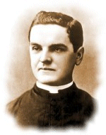

The Knights of Columbus was founded in 1882 by a 29-year-old parish priest, Father Michael J. McGivney, in the basement of St. Mary’s Church in New Haven, Connecticut. Today, more than a century later, the Knights of Columbus has become the largest lay organization in the Catholic Church.
The Order has been called “the strong right arm of the Church,” and has been praised by popes, presidents and other world leaders, for support of the Church, programs of evangelization and Catholic education, civic involvement and aid to those in need. As recently as 1992, Mother Teresa of Calcutta praised the Knights in a speech on the occasion of her reception of the first Knights of Columbus Gaudium et Spes Award.
Thanks to the inspired work of Father McGivney - as well as that of millions of other Knights over the past century - the Knights of Columbus now stands at its pinnacle of membership, benefits and service. Currently, there are over 1.76 million Knights of Columbus - more than ever before in our Order’s history. Together with their families, the Knights are nearly 6 million strong. In addition, from the first local council in New Haven, the Order has grown to more than 12,500 councils in the United States, Canada, Mexico, the Philippines, Puerto Rico, Cuba, the Dominican Republic, Panama, the Virgin Islands, Guatemala, Guam and Saipan. Each year, the Order continues this strong growth.
As the Order has grown, its benevolence has multiplied. The Order continues to break all previous records for charitable contributions and volunteer service. In the past decade, the Knights donated nearly $1 billion to numerous charitable causes and nearly 400 million hours of volunteer service. In 2007 alone, the Knights donated an all-time high of more than $144 million and 68 million volunteer hours to charitable causes.
Father McGivney’s founding vision for the Order also included establishing a life insurance program to provide for the widows and orphans of deceased members. The Order’s insurance program has expanded substantially to serve more effectively the Knights’ growing membership. Year after year, the Knights of Columbus has earned the highest possible quality ratings for financial soundness from A.M. Best and Standard & Poor’s. The Order provides the highest quality insurance and annuity products to its members, along with many other fraternal benefits.
Knights of Columbus are Catholic gentlemen committed to the exemplification of charity, unity, fraternity, patriotism, and defense of the priesthood. The Order is consecrated to the Blessed Virgin Mary. The Order is unequivocal in its loyalty to the Pope, the Vicar of Christ on earth. It is firmly committed to the protection of human life, from conception to natural death, and to the preservation and defense of the family. It was on these bedrock principles that the Order was founded over a century ago and remains true to them today.
If you want to join this great organization of Catholic men, it is likely that there is a local council near you. There you will find brother Knights working to fulfill the central mission of the Order: striving in charitable works; serving the Church and unified in following its teachings; supporting brother Knights in their temporal and spiritual needs; acting for the good of their country; and giving aid to widows, orphans, the sick and the poor. This is Father McGivney’s dream, echoing across the century, and living today in the hearts of his brothers and all of those they touch.

© Knights of Columbus - Kansas State Council
For comments or questions please email webmaster@kansas-kofc.org